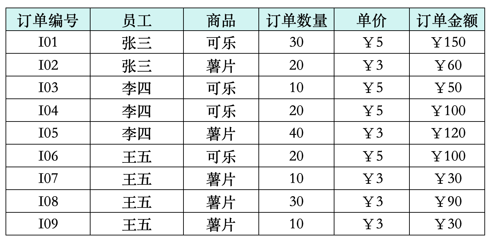
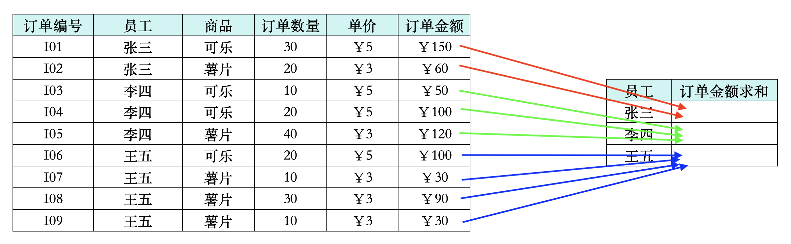
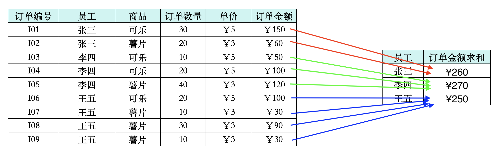
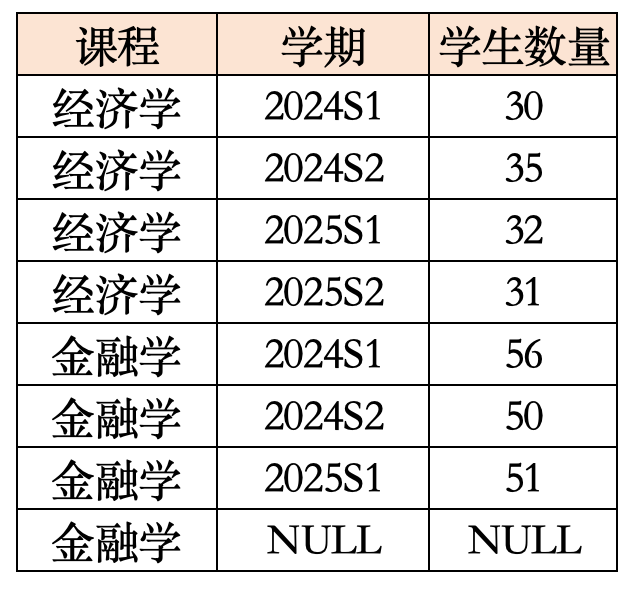
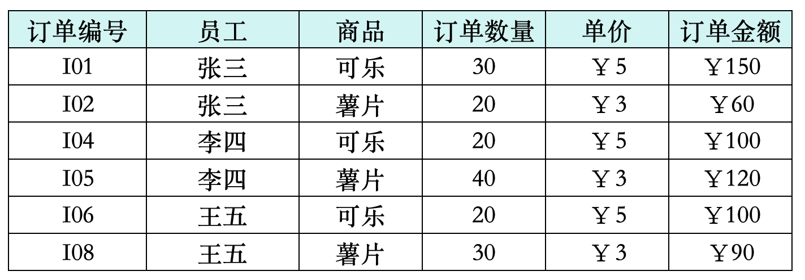
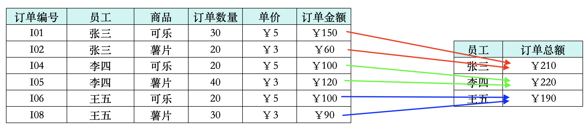
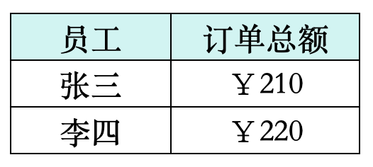

Class 2.4 - GROUP BY 语句与数据聚合运算¶
1. 基础数据聚合运算¶
(1) 聚合运算的概念¶
在 SQL 中，我们可以将不同行的数据放在一起进行运算，这就是聚合运算的概念。
在正式开始 SQL 聚合运算的学习之前，我们先来跟大家理清聚合运算的逻辑：
- 比方说我有以下一个表格：

- 在这个表格中，我们按员工来分组，将每个员工的销售金额数据放在一起：

- 如果我们是在 SQL 中操作的，SQL 就会问你，你把同一员工的数据放在一起了，放在一起之后干什么呢？这时候我们就要告诉SQL，我们要对同一员工的销售额数据放在一起，求个和：

这个就是聚合运算的基本逻辑，其核心有两大要素：
- 按照什么分组
- 分组之后，把聚在一起的数据进行什么样的运算
(2) SQL 中的聚合函数¶
在 SQL 中，聚合运算的要使用 GROUP BY 语句来实现：
GROUP BY语句的语法格式是：
SELECT
分组依据列,
聚合函数(列) AS 聚合计算别名
FROM 表名
WHERE 条件
GROUP BY 分组依据列
ORDER BY 分组依据列 或者 聚合计算别名
- 其中，
分组依据列是我们要按照哪个列来进行分组的列，聚合函数(列)是我们要对分组后的数据进行什么样的运算的函数 - 在 SQL 中，常用的聚合函数有以下几种：
| 聚合函数 | 作用 |
|---|---|
| COUNT(*) | 聚合在一起的数据中，有多少行数据 |
| COUNT(字段) | 聚合在一起的数据中，字段不为 NULL 的行有多少行 |
| SUM(字段) | 聚合在一起的数据之和 |
| AVG(字段) | 聚合在一起的数据的平均值 |
| MAX(字段) | 聚合在一起的数据的最大值 |
| MIN(字段) | 聚合在一起的数据的最小值 |
在这当中，有个特殊的聚合函数是 COUNT 函数：
-
首先来说，
COUNT和其他函数不一样的地方在于，这个函数里面可以填一个星号*，也可以填一个字段名，并且这个字段可以是任何数据类型，其他的聚合函数只能填数值类型的字段 -
接下来我们说一下
COUNT(*)和COUNT(字段)的区别：COUNT(*)是统计聚合在一起的数据中有多少行数据，不管数据中有没有 NULL 值COUNT(字段)是统计聚合在一起的数据中，字段不为 NULL 的行有多少行数据- 这两种写法的区别在于，
COUNT(*)会把 NULL 值也算在内，而COUNT(字段)则会把 NULL 值排除在外
-
我们来看下面这个例子：

-
在这个表格中：
COUNT(*)的结果是：经济学 4 & 金融学 4，因为这个表格中有 4 行数据的专业是经济学，4 行数据的专业是金融学，不管这些行数据的字段有没有 NULL 值COUNT(学期)的结果是：经济学 4 & 金融学 3，因为这个表格中有 4 行数据的专业是经济学，并且这 4 行数据的学期字段都不为 NULL；而金融学有 4 行数据，但是其中有 1 行数据的学期字段为 NULL，所以金融学的结果是 3COUNT(学生数量)的结果是：经济学 4 & 金融学 3，同样的道理，因为这个表格中有 4 行数据的专业是经济学，并且这 4 行数据的学生数量字段都不为 NULL；而金融学有 4 行数据，但是其中有 1 行数据的学生数量字段为 NULL，所以金融学的结果是 3- 注意，尽管
学生数量这个字段是数值型的，但是我们在使用COUNT函数的时候，并不对这个字段进行数值运算，而是把它当做一个普通的字段来统计不为 NULL 的行数，所以COUNT(学生数量)的结果和COUNT(学期)的效果是一样的
我们在 Chinook 数据库中，来练习一下 SQL 中的聚合运算：
- 在 Invoice 表中，我们按照 CustomerId 来分组，并且按照 Total 列来求和与求平均：
SELECT
CustomerId,
SUM(Total) AS Total_Sales,
AVG(Total) AS Average_Sales
FROM Invoice
GROUP BY CustomerId
ORDER BY Average_Sales DESC
;
======================================
CustomerId Total_Sales Average_Sales
---------- ----------- -------------
6 49.62 7.088571
26 47.62 6.802857
57 46.62 6.660000
45 45.62 6.517142
46 45.62 6.517142
... ... ...
49 37.62 5.374285
50 37.62 5.374285
41 37.62 5.374285
38 37.62 5.374285
47 37.62 5.374285
(59 rows affected)
- 在 Album 表中，我们按照 ArtistId 来分组，数一下每个 ArtistId 有多少张专辑：
SELECT
ArtistId,
COUNT(*) AS Album_Count1,
COUNT(Title) AS Album_Count2
FROM Album
GROUP BY ArtistId
;
======================================
ArtistId Album_Count1 Album_Count2
---------- ------------ ------------
1 2 2
2 2 2
3 1 1
4 1 1
5 1 1
... ... ...
271 1 1
272 1 1
273 1 1
274 1 1
275 1 1
(204 rows affected)
- 在 Track 表中，我们按照 AlbumId 来分组，先用数一数每个专辑有几首歌，再对
Milliseconds列进行求和并除以 60000，来计算每个专辑的总分钟数，再对UnitPrice列进行求平均：
SELECT
AlbumId,
COUNT(*) AS Track_Count,
SUM(Milliseconds) / 60000 AS Total_Minutes,
AVG(UnitPrice) AS Average_UnitPrice
FROM Track
GROUP BY AlbumId
;
==============================================================
AlbumId Track_Count Total_Minutes Average_UnitPrice
---------- ----------- ------------------ -----------------
261 17 657 1.990000
23 34 131 0.990000
238 14 65 0.990000
46 13 75 0.990000
215 14 59 0.990000
... ... ... ...
151 14 78 0.990000
194 16 68 0.990000
200 11 44 0.990000
100 9 40 0.990000
343 1 4 0.990000
(347 rows affected)
(3) 聚合函数单独使用¶
如果聚合函数不和 GROUP BY 语句一起使用，那么 SQL 就会把整个表格当做一个整体来进行聚合运算，它的语法格式是：
SELECT 聚合函数(列) AS 聚合计算别名
FROM 表名
WHERE 条件
- 聚合函数会作用在整个表格的所有行数据上，而不是作用在某个分组的行数据上
- 当然如果有
WHERE语句的话，就会先按照WHERE语句中的条件来对原始数据进行过滤，过滤掉不满足条件的行数据之后，再把剩下的行数据当做一个整体来进行聚合运算 - 最终得到的结果就是一个单行数据，这个单行数据就是整个表格的聚合运算结果
我们在 Chinook 数据库中，来感受一下 SQL 中的聚合函数单独使用：
- 在 Invoice 表中，我们对 Total 列进行求和与求平均：
SELECT
SUM(Total) AS Total_Sales,
AVG(Total) AS Average_Sales
FROM Invoice
;
==========================
Total_Sales Average_Sales
----------- -------------
2328.60 5.651941
(1 row affected)
- 在 Invoice 表中，我们先过滤掉 BillingCountry 为 'USA' 的数据，再对 Total 列进行求和与求平均：
SELECT
SUM(Total) AS Total_Sales,
AVG(Total) AS Average_Sales
FROM Invoice
WHERE BillingCountry != 'USA'
;
==========================
Total_Sales Average_Sales
----------- -------------
1805.54 5.624735
(1 row affected)
2. 按多列进行分组¶
(1) 多列分组的概念¶
在 SQL 中，我们不仅可以按照一列来进行分组，还可以按照多列来进行分组：
- 其实这个效果和我们之前讲的
SELECT DISTINCT语句的逻辑是一样的： - 比方说我们有以下这个表格：
-
在这个表格中：
- 如果我们按照
员工这一列来进行分组，那么得到三个分组：张三、李四、王五 - 如果我们按照
商品这一列来进行分组，那么得到两个分组：可乐、薯片 - 如果我们按照
员工和商品这两列来进行分组，那么得到六个分组：(张三, 可乐)、(张三, 薯片)、(李四, 可乐)、(李四, 薯片)、(王五, 可乐)、(王五, 薯片)
- 如果我们按照
(2) SQL 中的多列分组¶
在 SQL 中，我们按照多列来进行分组的语法格式是：
SELECT
分组依据列1,
分组依据列2,
...,
聚合函数(列) AS 聚合计算别名
FROM 表名
WHERE 条件
GROUP BY 分组依据列1, 分组依据列2, ...
ORDER BY 分组依据列1, 分组依据列2, ... 或者 聚合计算别名
我们在 Chinook 数据库中，来练习一下 SQL 中的多列分组：
- 在 Invoice 表中，我们先按照 BillingCity 来分组，并且按照 Total 列来求和：
SELECT
BillingCity,
SUM(Total) AS Total_Sales
FROM Invoice
GROUP BY BillingCity
ORDER BY Total_Sales DESC
;
================================
BillingCity Total_Sales
------------------- -----------
Prague 90.24
Mountain View 77.24
Paris 77.24
São Paulo 75.24
London 75.24
... ...
Stuttgart 37.62
Toronto 37.62
Tucson 37.62
Porto 37.62
Bangalore 36.64
(53 rows affected)
- 接着，我们在 Invoice 表中，先按照 BillingCity 和 BillingCountry 来分组，并且按照 Total 列来求和：
SELECT
BillingCity,
BillingCountry,
SUM(Total) AS Total_Sales
FROM Invoice
GROUP BY BillingCity, BillingCountry
ORDER BY Total_Sales DESC
;
================================================
BillingCity BillingCountry Total_Sales
------------------- -------------- -----------
Prague Czech Republic 90.24
Paris France 77.24
Mountain View USA 77.24
London United Kingdom 75.24
Berlin Germany 75.24
... ... ...
Boston USA 37.62
Tucson USA 37.62
Reno USA 37.62
New York USA 37.62
Bangalore India 36.64
(53 rows affected)
(3) 多列分组的注意事项¶
在 SQL 中，我们按照多列来进行分组的时候，有一个很重要的注意事项：
- 出现在
SELECT语句中的列，必须要么出现在GROUP BY语句中，要么被聚合函数包裹起来，否则 SQL 就会报错 - 这个注意事项掌握明白了，
GROUP BY语句就不难了，因为我们在写GROUP BY语句的时候，基本上就是按照这个注意事项来写的
比方说我们有以下这个表格：
在上面这个表格中，我们写这样一个 SQL 语句：
SELECT
员工,
订单数量,
SUM(订单金额) AS 订单总额
FROM 销售数据
GROUP BY 员工
-
这个 SQL 语句会报错，因为
订单数量这个列既没有出现在GROUP BY语句中，也没有被聚合函数包裹起来，所以 SQL 不知道我们要对订单数量这个列进行什么样的运算，所以就会报错 -
正确的处理方法是，
订单数量这一列是数值类型的，我们可以对它放在各种集合运算函数里
还是上面这个表格，我们再写这样一个 SQL 语句：
SELECT
员工,
商品,
SUM(订单金额) AS 订单总额
FROM 销售数据
GROUP BY 员工
- 这个 SQL 语句同样会报错，因为
商品这个列既没有出现在GROUP BY语句中，也没有被聚合函数包裹起来，所以 SQL 不知道我们要对商品这个列进行什么样的运算，所以就会报错 - 正确的处理方法是，
商品这一列是文本类型的，我们只能把它放在COUNT函数里，来统计每个员工卖了多少种商品，或者把它放在GROUP BY语句里，来按照员工和商品这两列来进行分组
3. 聚合运算后的数据过滤¶
在 SQL 中，我们可以对聚合运算的结果进行过滤：
- 但是过滤聚合运算的结果，不能使用
WHERE语句，而是要使用HAVING语句 HAVING语句的语法格式是：
SELECT
分组依据列,
聚合函数(列) AS 聚合计算别名
FROM 表名
WHERE 条件
GROUP BY 分组依据列
HAVING 聚合函数(列) > 某个值
ORDER BY 分组依据列 或者 聚合计算别名
这个语句中，又有 WHERE 语句又有 HAVING 语句，大家可能会觉得有点混乱，我们来理清一下：
WHERE语句是用来对原始数据进行过滤的HAVING语句是用来对聚合运算得到的产物进行过滤的- 一句话总结，如果在一个 SQL 语句中，既有
WHERE语句又有HAVING语句，那么WHERE是先选后算，HAVING是先算后选
我们来看这个表格：
- 在上面这个表格中，我们写以下 SQL 语句：
SELECT
员工,
SUM(订单金额) AS 订单总额
FROM 销售数据
WHERE 订单数量 >= 20
GROUP BY 员工
HAVING SUM(订单金额) > 200
ORDER BY 订单总额 DESC
- 首先，这个语句会先按照
WHERE语句中的条件订单数量 >= 20来对原始数据进行过滤，只保留订单数量大于等于 20 的行数据：

- 之后，这个语句会按照
GROUP BY语句中的条件员工来对过滤后的数据进行分组，并且按照SUM(订单金额)来计算每个员工的订单总额：

- 最后，这个语句会按照
HAVING语句中的条件订单总额 > 200来对聚合运算得到的产物进行过滤，只保留订单总额大于 200 的行数据：

我们在 Chinook 数据库中，来练习一下 SQL 中的 HAVING 语句：
- 在 Invoice 表中，我们按照 BillingCity 来分组，并且按照 Total 列来求和，最后用
HAVING语句来保留总销售额大于 50 的结果：
SELECT
BillingCity,
SUM(Total) AS Total_Sales
FROM Invoice
GROUP BY BillingCity
HAVING SUM(Total) > 50
ORDER BY Total_Sales DESC
;
==========================
BillingCity Total_Sales
------------- -----------
Prague 90.24
Mountain View 77.24
Paris 77.24
Berlin 75.24
London 75.24
São Paulo 75.24
(6 rows affected)
- 在 Track 表中，按照 AlbumId 来分组，先用数一数每个专辑有几首歌，再对
Milliseconds列进行求和并除以 60000，来计算每个专辑的总分钟数，最后用HAVING语句来保留总分钟数大于 40 的结果：
SELECT
AlbumId,
COUNT(*) AS Track_Count,
SUM(Milliseconds) / 60000 AS Total_Minutes
FROM Track
GROUP BY AlbumId
HAVING SUM(Milliseconds) / 60000 > 40
ORDER BY Total_Minutes DESC
;
======================================
AlbumId Track_Count Total_Minutes
---------- ----------- -------------
229 26 1177
253 24 1170
230 25 1080
231 24 1054
228 23 996
... ... ...
133 9 41
188 11 41
254 1 41
205 10 41
144 10 41
(233 rows affected)
;